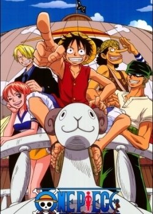
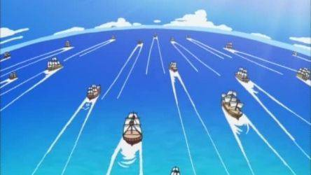
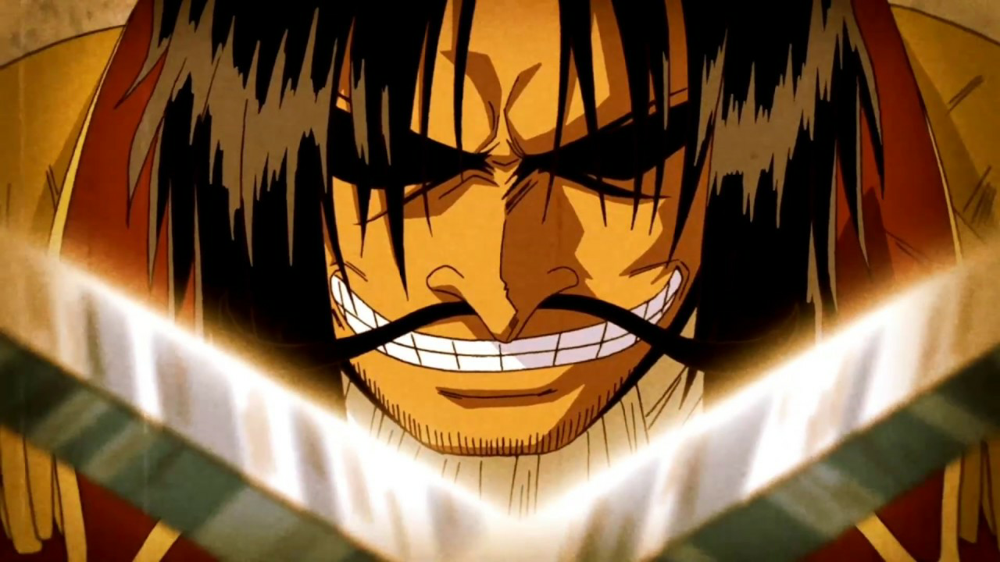

что такое "one piece?"
One Piece — аниме о пиратах, путешествующих по морю Грандлайн. Главный герой — подросток по имени Монки Д Луффи, у которого есть мечта стать королем пиратов, ради чего он и отправился в море.
События аниме происходят во времена «великой эры пиратов», начавшейся после казни бывшего короля пиратов — Гол Д. Роджера.
Богатство, слава, власть - у короля пиратов было все в этом мире. Перед казнью Роджер произнес слова, которые побудили всех пиратов отправиться на Грандлайн. "Мое сокровище? Если хотите его, берите! Я всё оставил там"
Надеюсь, теперь вам стало интересно, и все сомнения отпали. А посмотреть One piece и купить мерч по нему можно на нашем сайте!